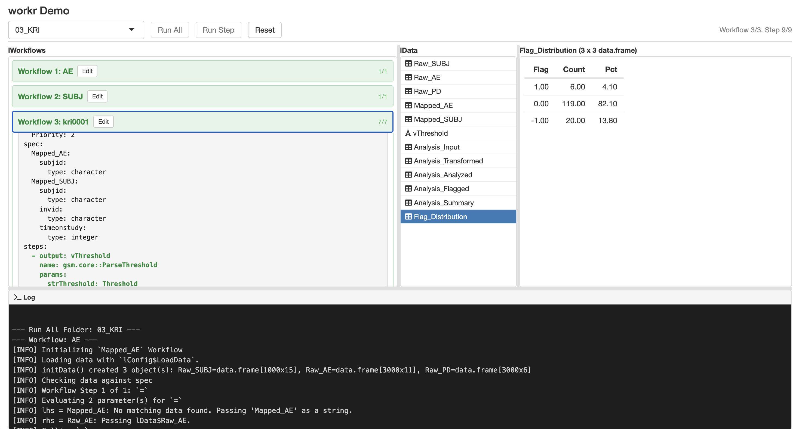
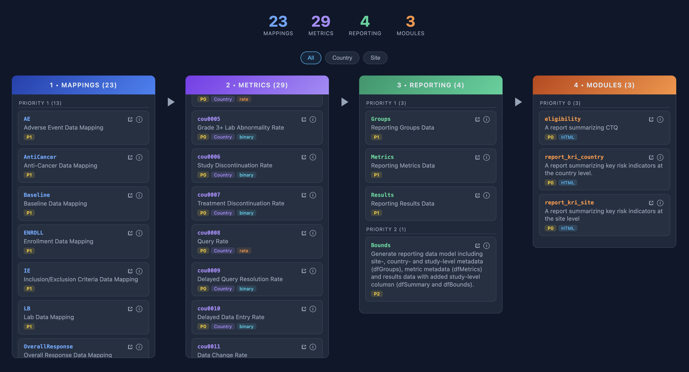

A very simple R data pipeline framework. {workr} provides a minimal mental model for describing and executing step-by-step workflows. These simple workflows can be combined into configurable data pipelines that can automate large tasks.
What is {workr}?
{workr} was built to solve a specific problem: reusable, customizable data pipelines for complex clinical trial monitoring.
The core functions in {workr} were originally developed as part of the {gsm} framework for risk-based quality monitoring (RBQM). The {gsm} team developed a stable, reusable model for generating metrics to monitor clinical trials.
Our challenge was figuring out how to run those metrics across a large portfolio.
Take 30 studies with monthly snapshots, each needing 15 metrics computed in 5 steps, and you get 27,000 computations per year. Each study also has slightly different requirements, so maintaining individual scripts quickly becomes a massive pain.
{workr}’s solution: Define workflows once, track customizations in YAML files, and compose them into larger pipelines.
The original gsm::RunWorkflow functions were developed in a few hours and were seen as a stopgap until we picked a “real” pipeline.
The approach has proven to be surprisingly stable and flexible. So much so that we’ve created {workr} and started using it outside of our {gsm} pipelines.
{workr} workflows
{workr} workflows are list objects that are typically defined in yaml files. Each workflow has the following components:
- Steps are functions that accept data and parameters, producing output that gets added to the shared data list
- Meta is workflow-level configuration accessible to all steps
- Spec optional data specification defining expected input data for the workflow.
The package provides three core functions for running workflows:
-
workr::RunStep()- execute a single workflow step -
workr::RunWorkflow()- execute a workflow specification (YAML) -
workr::RunWorkflows()- run multiple workflows in sequence
Sample Workflow
Define a workflow in YAML:
# hello_cars.yaml
meta:
ID: hello_cars
col: speed
steps:
- name: dplyr::pull
output: speed
params:
df: df
col: col
- name: mean
output: result
params:
lData: speedRun it from R:
wf <- yaml::read_yaml("hello_cars.yaml")
lData <- list(df = cars)
result <- workr::RunWorkflow(
lWorkflow = wf,
lData = lData
)
# result = 15.4 (mean of cars$speed)Each step in a workflow:
- Calls a function (specified by
step$name) - Passes parameters from
params(resolving references tolData,meta, or literal values) - Saves the result to
lDatausing theoutputname - Makes it available for the next step
That’s it! By chaining steps (and even whole workflows) together, you can build complex pipelines from simple, reusable components.
Combining Workflows
{workr} workflows are designed to be chained together. The output of one workflow becomes the input for the next. {workr} provides several tools to support this functionality.
workr::RunWorkflows calls multiple workflows
While workr::RunWorkflow runs all the steps in a single workflow, workr::RunWorkflows (with an s) runs multiple workflows one after the other. Just pass a list of workflows. A few details: - workr::RunWorkflows() still takes a single lData object as input, each workflow makes its updates, and then the updated lData object is passed along to the next workflow. - workr::MakeWorkflowList() is an easy way to read a whole folder of YAML workflows into the format expected for workr::RunWorkflows(). - workr::MakeWorkflowList() reorders workflows based on meta$priority, so if you need things to run in a certain order, make sure to set that parameter. If nothing is provided, priority is set to 0.
workr::RunProject calls multiple sets of workflows
Last but not least, sometimes you want to chain multiple calls of workr::RunWorkflows(). workr::RunProject() calls workr::RunWorkflows() for every sub-directory (phase) in a given project directory, sharing one lData object across phases.
# Project directory structure:
# project/
# 01_mapping/
# ae.yaml
# lb.yaml
# 02_analysis/
# kri.yaml
results <- workr::RunProject(
strPath = "project",
lData = list(raw_data = my_data)
)
# Runs 01_mapping workflows first, then 02_analysis
# Outputs from 01_mapping are available as inputs to 02_analysisKey options:
-
strPhases— run a subset of phases, or control their order -
bReturnResult/bKeepInputData— passed through toRunWorkflows() -
bRecursive— passed through toMakeWorkflowList()
Phases are sorted alphabetically by default (use numeric prefixes like 01_, 02_ to control order).
workr::Snapshot combines workflows across packages
One nice thing about {workr} workflows is that they can be combined across packages. To support this, {workr} includes tooling for creating reproducible snapshots of workflows from multiple packages.
pkgSnapshot() resolves a list of GitHub packages to specific versions and generates:
-
manifest.csv— pinned package versions with SHAs -
rproject.toml— rv-compatible dependency file -
workflows/— merged workflow YAML files pulled from each package’sinst/workflow/
Snapshots are stored on orphan branches (prefixed ss-*) and updated nightly via GitHub Actions.
📦 Demo snapshot (ss-demo) — gsm.core, gsm.mapping, gsm.kri, gsm.reporting
Visualizing Workflows
YAML workflows can be a little hard to follow, especially when you’re running a few (or more than a few) in a row, so we’ve created some tools to help visualize and track workflows.
{workr} Shiny app

workr::DemoApp_init() launches a simple Shiny app application that lets you explore and run workflows in real time.
open.gismo

open.gismo is an end-to-end platform for running {workr} projects on GitHub.
Automation via GitHub Actions
We provide several GitHub Actions to automate snapshot creation and site deployment.
| Workflow | Trigger | Purpose |
|---|---|---|
snapshot.yaml |
Reusable / manual | Resolve packages and generate snapshot artifacts on an orphan ss-* branch |
nightly-snapshot.yaml |
Cron (2am UTC) / manual | Runs snapshot.yaml for configured snapshot branches |
site-build.yaml |
Reusable | Build the workflow explorer app from ss-* branch data |
site-deploy.yaml |
Push to ss-* / cron / manual |
Standalone Pages deploy for repos without pkgdown |
pkgdown-with-examples.yaml |
Push to main/dev / PR / manual | Build pkgdown site with examples, slides, and explorer |
pkgdown-cleanup.yaml |
PR close | Remove PR preview deployments from gh-pages |
R-CMD-check.yaml |
Push to main / PR | Standard R CMD check |
R-CMD-check-dev.yaml |
Push to dev / PR | R CMD check against dev dependencies |
r-releaser-caller.yaml |
Manual | Release automation via r-releaser |